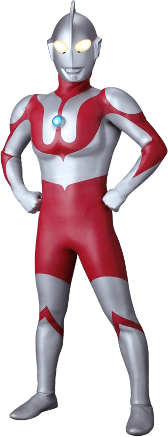
Ultraman
1966-1967 - 39 Eps
The series follows the adventures of the Science Patrol, a special scientific team investigating and combating threats from aliens and kaiju. Unbeknownst to the team, fellow member Shin Hayata possesses the ability to transform into the giant alien superhero Ultraman in moments of crisis.
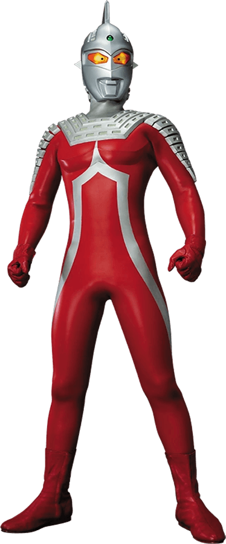
Ultraseven
1967-1968 - 49 Eps
In the not-too-distant future, Earth finds itself constantly under attack from extraterrestrial threats. To combat them, the Terrestrial Defense Force establishes the Ultra Garrison. Joining their fight is the mysterious Dan Moroboshi who is secretly an alien from the Land of Light in Nebula M-78 and transforms into his true alien form, Ultraseven, in times of crisis.
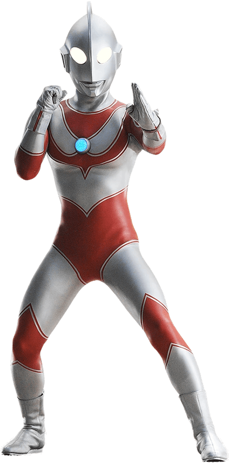
Return of Ultraman
1971-1972 - 51 Eps
Hideki Go is killed while trying to rescue a little boy and a dog from the falling rubble. His valiant sacrifice is noted by everyone, including his friends and the new defense force MAT. Looking over Hideki is Ultraman Jack, who is so touched by the race car driver's heroism, that he decides to combine his life force with that of Hideki, thus bringing him back to life.
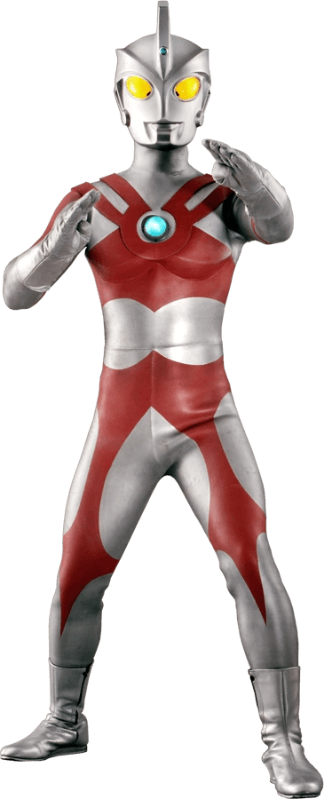
Ultraman Ace
1972–1973 - 52 Eps
A pair of youths Seiji Hokuto and Yuko Minami lost their lives in protecting nearby civilians as the fifth Ultra from M78, Ultraman Ace fused with them. The pair were given Ultra Rings each per person and transforms into Ace whenever they perform the Ultra Touch. Seiji and Yuko were enlisted into Terrible-monster Attacking Crew, with the Ultra Brothers and Father of Ultra occasionally appeared to help them.
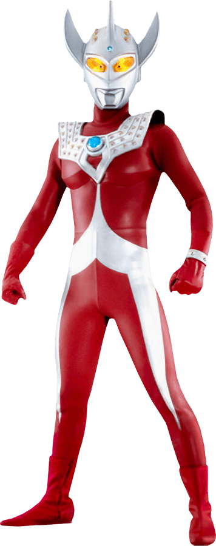
Ultraman Taro
1973–1974 - 53 Eps
Kotaro Higashi is a wanderer who joined ZAT during his return to Japan, but his aircraft crashed and died from severe burns while fighting Astromons.The Five Ultra Brothers brought Kotaro's body to their home world of Nebula M-78 as Mother of Ultra warped him with the Brothers' own light, turning Kotaro into Ultraman Taro, who would now form the Six Ultra Brothers.
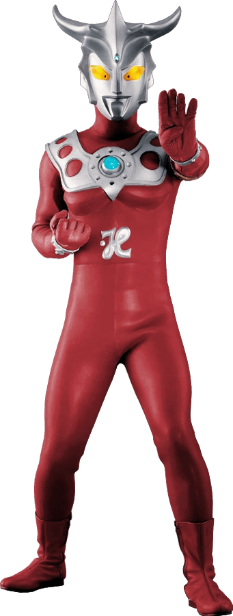
Ultraman Leo
1974–1975 - 51 Eps
Ultraman Leo comes from Nebula L77 and takes the human form of Gen Ootori. Gen is a gymnastics teacher on the side and joins MAC to defend the Earth. Gen and Dan Moroboshi regularly train together, allowing Ultraman Leo to learn many moves in human form. Dan asks Leo to keep defending the Earth and disappears in the conflagration.
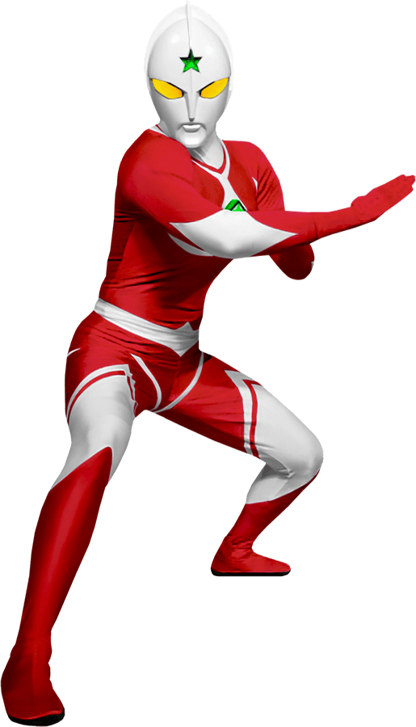
The☆Ultraman
1979-1980 - 50 Eps
EGG3 officer Chouichirou Hikari was scouted to join the Science Defense Squad on Earth but while on his way back, he was bonded to Ultraman Joneus, an Ultra-Person of U-40 who was sent by his brethren to fight against the monster threats and alien invasions. This allows the youth to become an Ultraman against countless enemies while keeping his identity a secret from his fellow members.
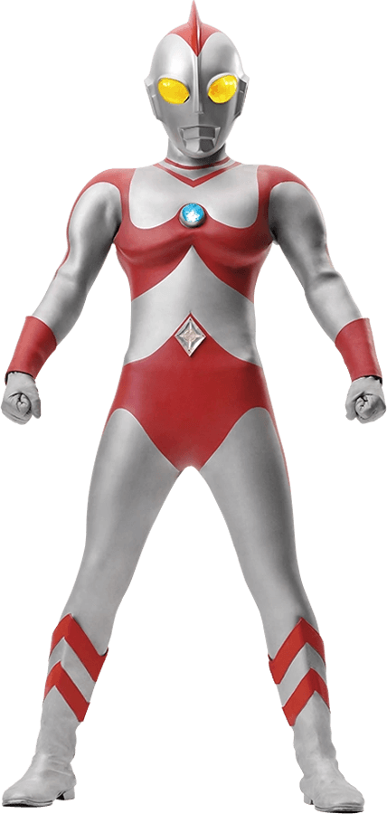
Ultraman 80
1980–1981 - 50 Eps
Ultraman 80 returns to the setting of the main Showa continuity, taking place after 5 years of peace since the end of Ultraman Leo. A new middle school teacher Takeshi Yamato is actually the disguised Ultra from the Land of Light, Ultraman 80, whose mission is to fight a new wave of monsters resulted from Minus Energy while stabilizing his life as a teacher and UGM member.
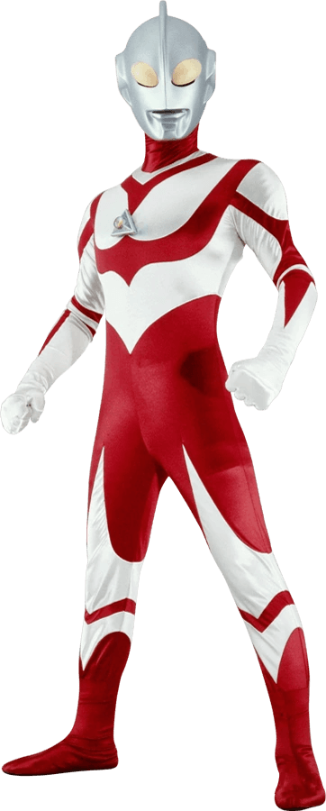
Ultraman Great
1992 - 13 Eps
Ultraman: Towards the Future, also known as Ultraman Great in Japan, is a series produced in 1990 in Australia by the South Australian Film Corporation and Tsuburaya Productions, making it the tenth series in the franchise. There were 13 episodes filmed. At the time, eco-awareness was at a high, and many episodes included environmental themes.
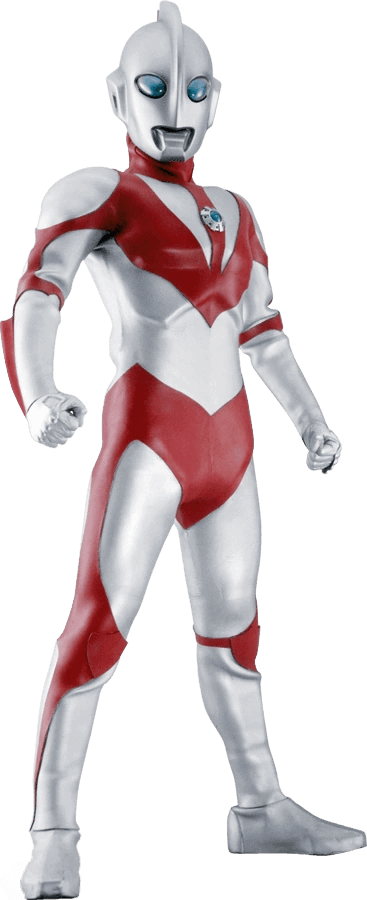
Ultraman Powered
1993 - 13 Eps
Ultraman: The Ultimate Hero, also known as Ultraman Powered in Japan, is a tokusatsu show co-produced by Major Havoc Entertainment and Tsuburaya Productions in the United States in 1993, running for 13 episodes. Following the footsteps of the Australian-produced Ultraman: Towards the Future, this was the second live-action Ultraman Series produced outside Japan and the eleventh entry in the franchise overall.
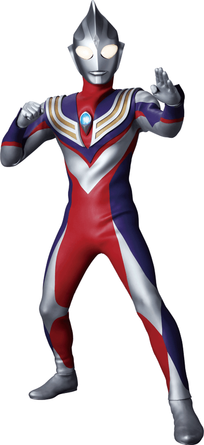
Ultraman Tiga
1996–1997 - 52 Eps
The Terrestrial Peaceable Consortium is created along with its branch, GUTS (Global Unlimited Task Squad). GUTS finds ancient statues. The third one gains life from the spiritual energy of officer Daigo, a descendant of the ancient race. Daigo and the remaining statue merge into a single being, made of light. Daigo is revealed by the hologram of the prophecy that 30 million years in the past, a great evil that not even the giants could stop, destroyed the ancient civilization.
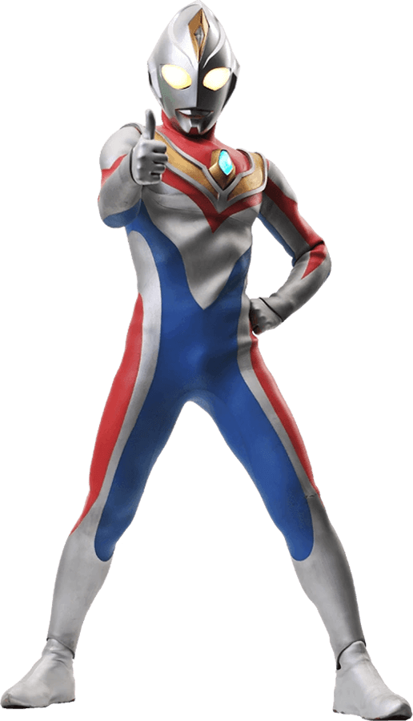
Ultraman Dyna
1997–1998 - 51 Eps
One day, the Neo Frontier is attacked by an alien race known as the Spheres. Shin Asuka has just joined Super GUTS and is in the middle of training maneuvers above Earth's atmosphere when he and his comrades are attacked. He proves himself in battle and can hold his own against ace pilot Ryo Yukimura. However, his ship is damaged and he ejects, after which he encounters a shining light. It is then that a new giant of light merges with the bewildered Shin, saving his life.
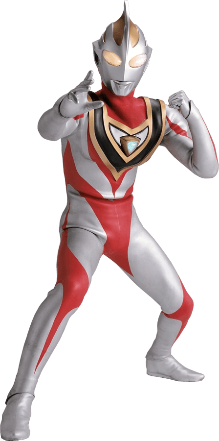
Ultraman Gaia
1998–1999 - 51 Eps
Gamu Takayama, a 20-year-old scientist and member of the Alchemy Stars, briefly encounters Gaia during some virtual reality experiments he performs with the secret purpose of discovering the will of the Earth, later merging with him in order to fight various monsters that threaten the safety of the Earth.
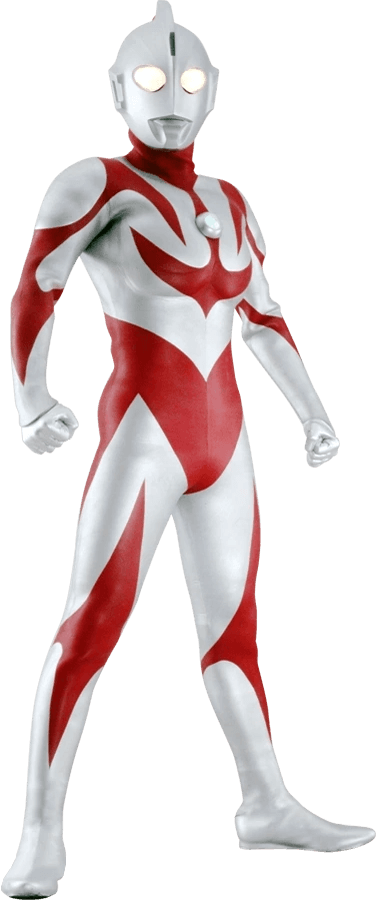
Ultraman Neos
2000-2001 - 12 Eps
Genki Kagura was bonded to Ultraman Neos as they fight against the monster brought to life by the Dark Matter mutations with the assistance of HEART and a fellow Ultra veteran, Ultraseven 21. During that time, Kagura crosses paths with Alien Zamu, a race of extraterrestrial aliens who took refuge on Earth when their planet was ravaged by the effects of Dark Matter.
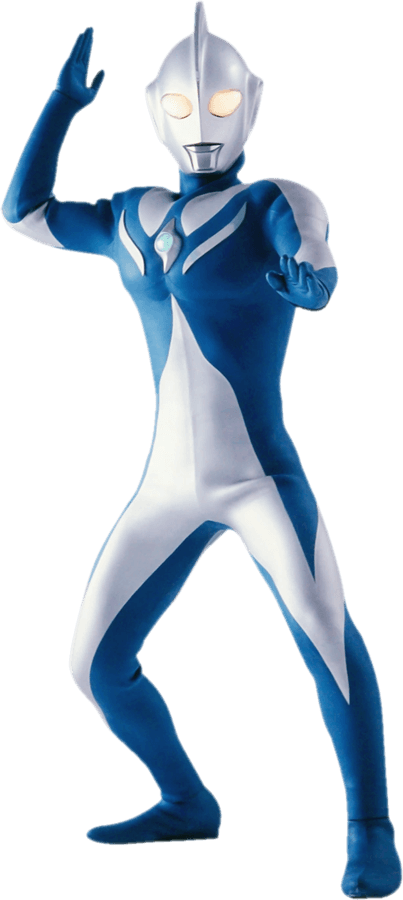
Ultraman Cosmos
2001–2002 - 65 Eps
Musashi, now 19 and a member of Team EYES, once again encounters the being of light from his childhood. The dark being Chaos Header has appeared and is corrupting the monsters of Earth, making them become ravenous and violent creatures that threaten humanity. Through Musashi's will to see the beasts and humans live in peace, Cosmos grants him a new power that will allow him to heal the corrupted creatures.
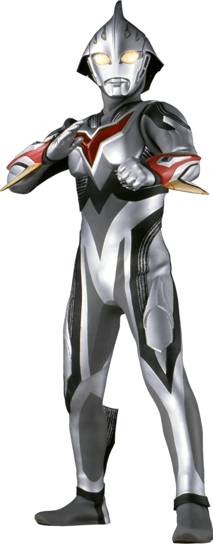
Ultraman Nexus
2004–2005 - 37 Eps
Nexus focuses on the viewpoint of Night Raider rookie Kazuki Komon in the fight against Space Beast threats. During their mission, Komon frequently comes in contact with the titular Ultraman and the relationship he established with the latter's hosts.
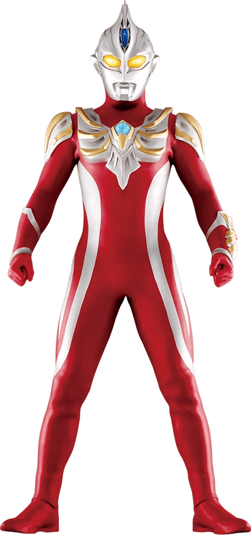
Ultraman Max
2005–2006 - 39 Eps
Touma Kaito dreamed of entering DASH because previously he was a volunteer who often rescued people from natural disasters. When he was still an apprentice, Touma recklessly replaces one of the wounded DASH members to help dispel the monster to avoid heavy casualties. At a critical moment, Touma bonded with Ultraman Max to save his life and fought the incoming monster on his own.
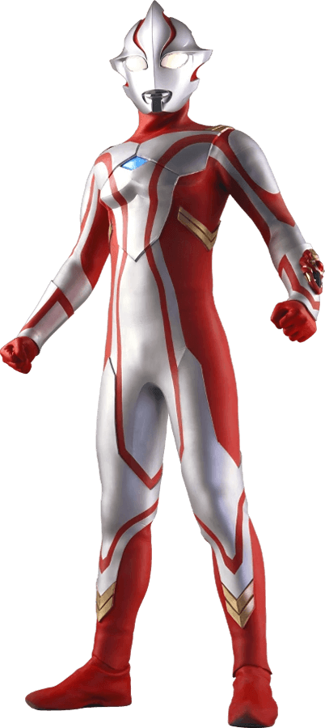
Ultraman Mebius
2006–2007 - 50 Eps
Before leaving for the earth, Ultraman Mebius was granted the Mebius Brace by the father of Ultra and told of the importance of the name "Ultraman". On his way there, Mebius saw a transport ship being sucked into the ultra zone, The crew was saved by the sacrifice of the Captain's son Hiroto Ban. seeing his selflessness, Mebius tried to save the young man but was a minute too late. He created his human form after the young man, Hiroto Ban, in his honor.
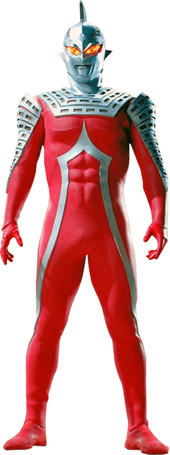
Ultraseven X
2007 - 12 Eps
The series took place in a world where all forms of war and terrorism had long ended, bringing forth a dystopian future. An amnesiac man named Jin awakened and was entrusted with missions given by DEUS to fight against aliens that had slipped into the human society, joining forces with agents K and S. During that moment, he was given a pair of glasses by Elea Saeki to transform into the red giant.
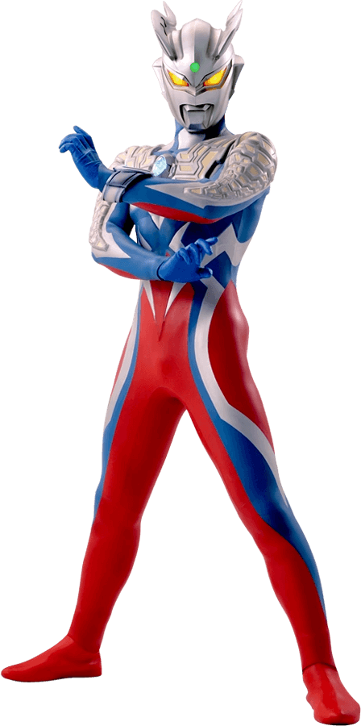
Ultraman Zero
2009-2012 - 3 Movies
Ultraman Zero is the son of Ultraseven. He was trained under Ultraman Leo after he was banished from the Land of Light by his father for attempting to take the Plasma Spark for himself. His training ultimately led to his redemption in his battle with Belial. He first appeared in Mega Monster Battle: Ultra Galaxy before starring in his own film Ultraman Zero: The Revenge of Belial and its 2012 sequel Ultraman Saga.
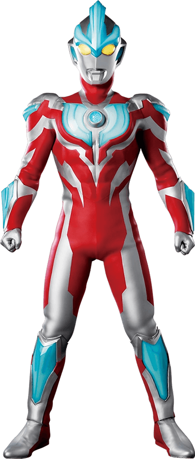
Ultraman Ginga and Ginga S
2013-2014 - 11 Eps + 16 Eps
All of the Ultramen and monsters have been turned into figures known as Spark Dolls and become scattered throughout the universe. A young man named Hikaru Raido finds an item called the Ginga Spark which not only allows him to become Ultraman Ginga but also allows him to go UltLive with the figures to revert them to their rightful size and become one with them.
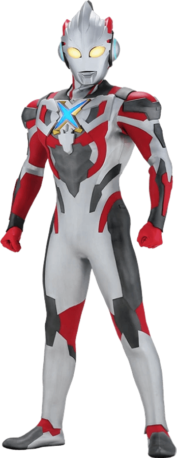
Ultraman X
2015 - 22 Eps
Daichi Ozora, a member of Xio's Lab Team who was orphaned when his parents got lost in the Ultra Flare, bonds and transforms into Ultraman X to battle threats from both aliens and monsters. He soon learns of the truth behind Ultra Flare and resolves to help Ultraman X to regain his physical body after the incident had trapped him in the form of computer data.
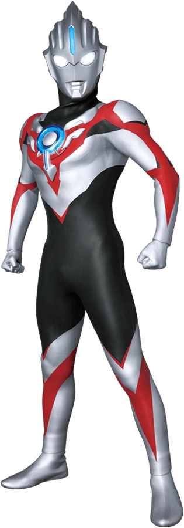
Ultraman Orb
2016 - 25 Eps
Gai secretly transforms into Ultraman Orb, a warrior of light who borrows the power of past Ultra Warriors upon losing his original form to fight against frequent monster attacks while facing Juggler, his original ally turned adversary after being rejected to be chosen for Orb's power.
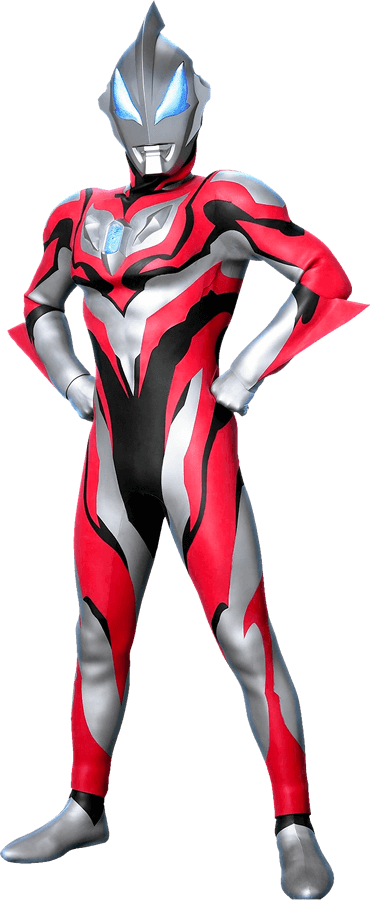
Ultraman Geed
2017 - 25 Eps
Riku Asakura is a teenager with no knowledge of his past. When a giant monster destroys his home, Riku and his alien roommate Pega stumble upon a secret base 500 meters below the ground. Riku learns he is an Ultraman in human form and is given the ability to use the Geed Riser transformation device and Ultra Capsules by the base's operating system RE.M. to become Ultraman Geed to save everyone.
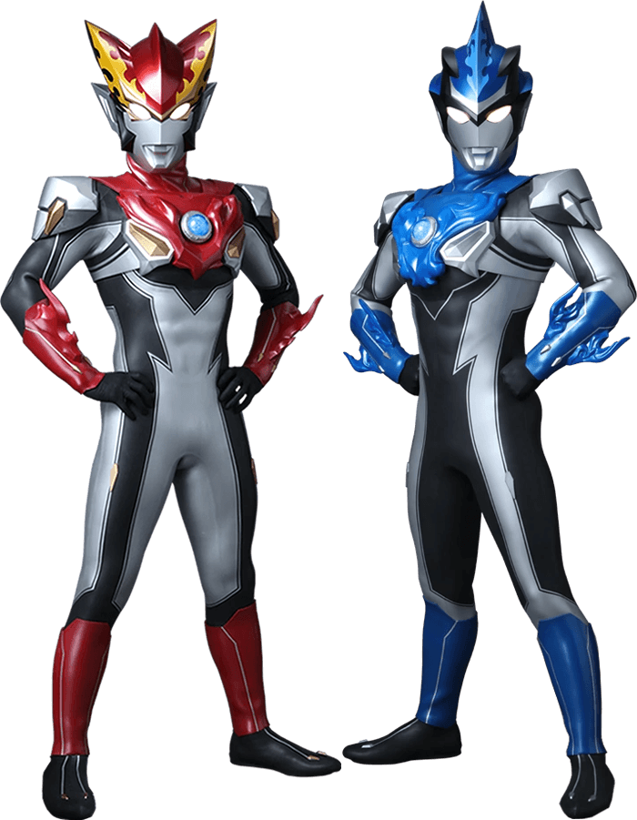
Ultraman R/B
2018 - 25 Eps
Minato siblings Katsumi and Isami were rescued by the R/B Gyros from Grigio Bone's attack, transforming them into Ultramen Rosso and Blu. The brothers face their emotions with allies and against enemies, realizing important things they tend to take for granted. Although both siblings collide against each other, they willingly cooperate when fighting against opponents.
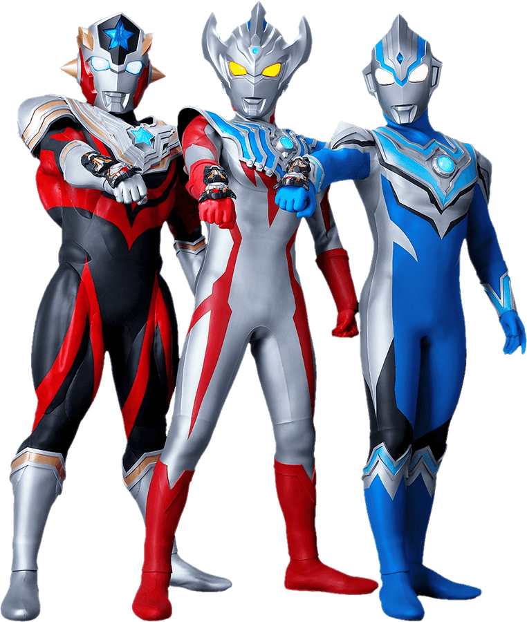
Ultraman Taiga
2019 - 25 Eps
Hiroyuki joined a private security organization E.G.I.S. to handle extraterrestrial cases while living in a society mixed with aliens from various point of origin. While handling a Villain Guild-related case, a fully recuperated Taiga awakens and therefore allows Hiroyuki to transform in order to combat giant monsters as two other Tri-Squad members, Titas and Fuma made their way to Earth and bonded with the former as a shared host.
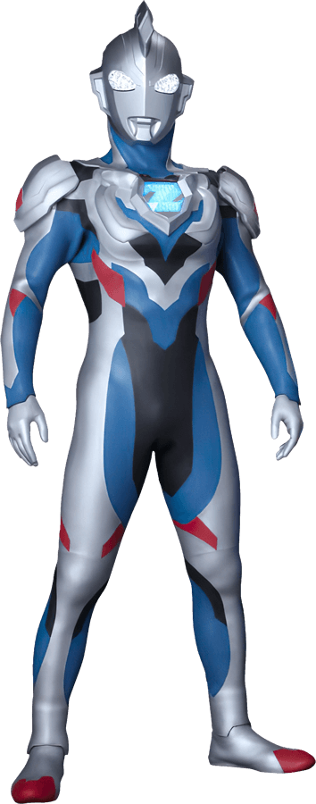
Ultraman Z
2020 - 25 Eps
Ultraman Z carried out Ultraman Zero's mission and the Z Riser to recover the stolen Ultra Medals on Earth, where he bonded with STORAGE officer Haruki Natsukawa. Ever since then, Haruki assisted Z in reclaiming lost Ultra Medals and at the same time defending mankind from monsters and extraterrestrial threats.
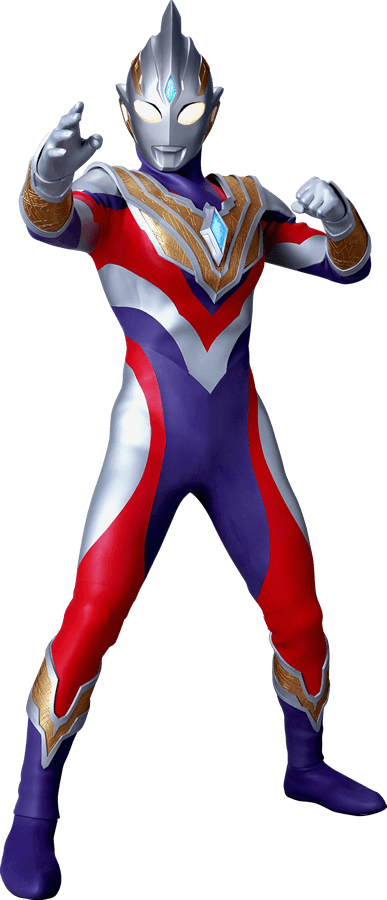
Ultraman Trigger
2021 - 25 Eps
Kengo Manaka is bonded to the titular Ultra when the three Giants of Darkness are resurrected from their ancient seal to claim the Eternity Core and threaten the safety of the universe. Kengo is drafted into the defense team GUTS-Select on Earth, where he protect Yuna, whose status as Yuzare's descendant makes her an open target to their enemies.
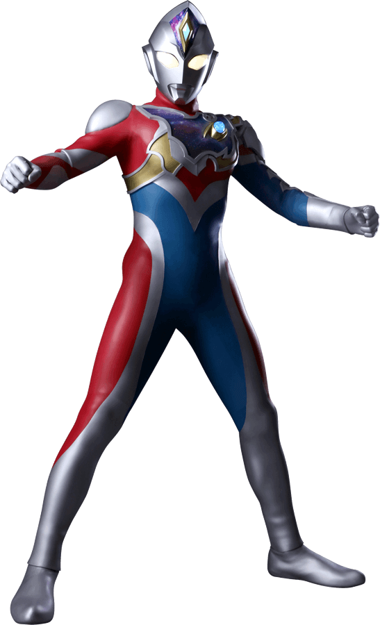
Ultraman Decker
2021 - Airing
Earth has entered a period of peace once again. When humanity begins their outer space exploration program and their monster attack countermeasures diminish at the same time, the Spheres launch their attacks, causing Earth to be desolated and become a lone star. A civilian named Kanata Asumi bonds with the titular Ultraman Decker and joins the newly reformed GUTS-Select in addition to his fellow rookie members in their fight against the Spheres.